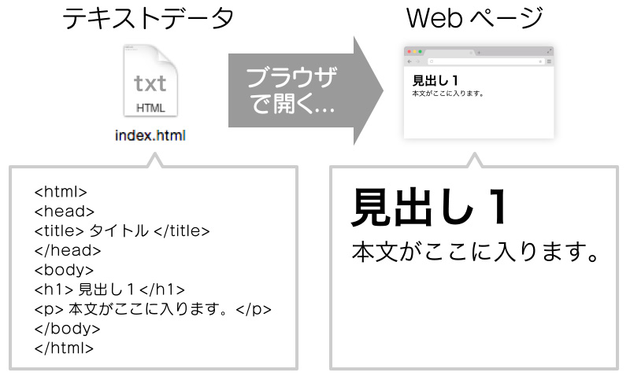

gitとは、プログラムのソースコードなどを管理するためのツール。
ソースコードとは、プログラミング言語で書かれた命令文のこと。
どのようなものか
- バージョン管理システムの一種
- ファイルの変更履歴を記録できる
- 誰がいつ、どこを直したのか追跡できる
- チームで同じプロジェクトを進めるときに便利
gitは、分散型のバージョン管理システムに分類される。
分散型とは、開発者一人ひとりがプロジェクト全体の履歴を保持し、ネット接続や中央サーバーに依存せずに作業できるバージョン管理の仕組みである。
gitとgithubの違い
gitは仕組み（ツール）であり、githubはその仕組みを使う場所（サービス）である。
git：
分散型バージョン管理システム（ソフトウェア）
- ファイルの変更履歴を管理できるツール
- オフラインで使える
github：
gitリポジトリをオンラインで保存、共有できる「ウェブサービス」
→gitで管理したプロジェクトをクラウド上に置いて、 チームや世界中の開発者と共同作業できる場所。
htmlに関して
htmlとは HyperText Markup Language の略。
マークアップとは、文章に意味を表す印（タグ）をつけること。
そうすることで文字などを自分の思うように配置、表示することができる。
例
〈h1〉こんにちは!〈/h1〉↓
こんにちは!
というようになる
htmlとは簡単に
- Webページの骨組みをつくるマークアップ言語。
- テキスト、画像、リンク、表などを配置するために、タグを使う。
- ブラウザで表示される。
タグの例と意味
〈h1〉など：見出し
〈br〉：改行
〈img〉：画像の表示
などなど
大まかな仕組み

画像引用元